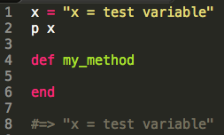
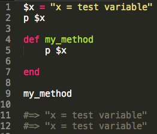

Ruby
What's 'Variable Scope' ? And how does it relate to 'Self' ?
"...few elements mean the same thing everywhere. Integers, for example, mean what they mean wherever you see them. The same is true for keywords: you can't use keywords like "def" and "class" as variable names, so when you see them, you can easily glean what they're doing. But most elements depend on context for their meaning." -Well-Grounded Rubyist
When it comes to understanding scope and self, I think one of the most important parts of the quote is the use of 'context.' Let's dive in.
Scope
When it comes to a variable, scope has to do with whether or not it's visible to Ruby at a given stage in your program. An easy way to remember this is that a scope is used to see something; similar to a microscope or a telescope. The ability for Ruby to 'see' your variables is determined by where and how you use them. Context!Here we define "x" as a top-level local variable. 'Top-level' basically means it exists outside of any other object (in theory an object at the top level belongs to the class "Object" with the name "main", but that's for later). In our example, "x" is a local variable because it only exists within the scope of where it was defined. In this case, that scope is the top-level:

To test this we create a method and try to print "x" from within, giving us the following error. Ruby understands that we're trying to print "x", but it can't see where it was originally defined. This is because the scope of local variables begins and ends: at the top level, at every class or module definition block, or every method definition block. It's the latter that triggered this scope change, being when we defined "my_method". So when the scope moves inside the method, Ruby can no longer see where "x" was defined:

Here we fix it by changing "x" from a local to a global variable. We do this by prepeding it with "$". Global variables have a global scope. This means Ruby can find them virtually anywhere in the program. Awesome, right? Sort of. Recall OOP principals urge our objects to, in some ways, be as weak as possible. 'Single-use' and lack of knowing other method's inner-workings are considered strong principals. So a variable that can be accessed from anywhere in a program draws a red flag. This example shows global scope basically means 'anywhere in the program':

That's about it as far as scope goes. A variable's scope is determined by where it was defined and called. And scope changes three ways: at the top-level (default), at the begin/end of Class and Module definitions, and every method definition. Next, let's take a quick look at the idea of self.
Self
It feels a little more confusing, but it doesn't have to! The easiest way to begin is to recall everything in Ruby is an object. To ask, "which object is self?" is to ask "which object is Ruby currently looking at." That way, when we call a method, Ruby knows which item to look at.There can only be one self at a time, so determining which object is self is as simple as recognizing which context our program is in:
- Top-level: when our program is at the top level, self is an instance of Object and is named "main":
- Top-level method: when your program is in a method at the top-level (meaning it is not, for example, inside a class), self is whichever object is self when the method is called. Keep in mind scope changes at every method definition, but this isn't necessarily the case for self. In our example, scope changes, but we notice self does not:
- Class-top: If your program is currently at the top level inside a class, self is the object you're currently in, being that class (the same goes for modules):
- Instance method inside a class: when in a method that resides in a class, self is the instance of the class. So if you have a class generator called "Calculator", and a new instance of it called "new_calc", then self is the instance, meaning the object "new_calc" (the same goes for modules). Don't quote me on this, but I think this is the same reason "main" was the object in our earlier example!


To recap, scope and self share some similarities. Yet they have different implications - so much that they can be in differeing states at the same time. Being able to quickly identify scope and self are paramount when it comes to understanding your's and other people's code. Start with these basics and go from there!
I hope that helps, and if you want to learn more about scope and self I recommend Chapter 5 of the Well-Grounded Rubyist. And for some self in action, take a peek at my attempt to code'ify the contents of a silverware drawer. Note the use of self in the "sell_silverware" method of the "silverware" class. Can you tell what it's doing? If it's unclear, feel free to get in touch and we can chat.